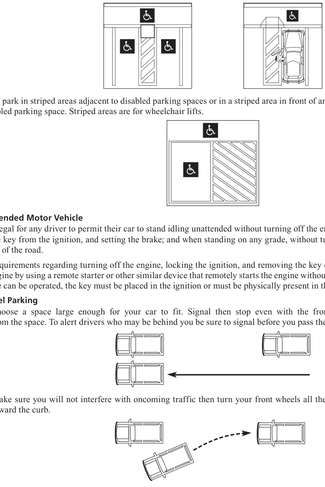
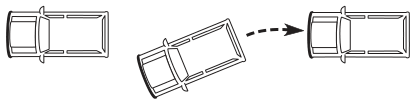
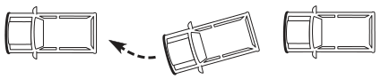
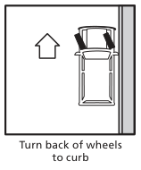
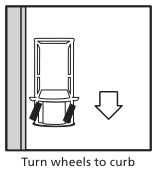
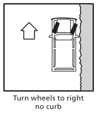
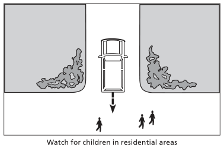

Not all crashes happen while a vehicle is moving. An improperly parked vehicle may also cause a crash. When you leave your vehicle, turn the motor off, set the parking brake and remove the key. Be sure to look behind you for any oncoming traffic before opening your car door.
Do Not Park, Stop, or Stand a Vehicle
In the following situations, you should not park, stop, or allow a vehicle to stand idling:
- On the road side of any vehicle stopped or parked at the edge or curb of a street
- On a sidewalk or crosswalk
- Within an intersection
- Between a safety zone and adjacent curb or within 30 feet of a place on the curb immediately opposite the end of a safety zone
- Alongside or opposite of any street excavation or obstruction when stopping, standing, or parking would obstruct traffic
- On a bridge or other elevated structure on a highway or within a highway tunnel
- On any railroad track
- At any place where an official sign prohibits stopping
Special Note: Temporarily stopping to obey signs, signals, etc. is not considered parking or standing.
Do Not Park or Stand a Vehicle
Whether occupied or not, do not park or allow a vehicle to stand idling:
- In front of a public or private driveway
- Within 15 feet of a fire hydrant
- Within 20 feet of a crosswalk at an intersection
- Within 30 feet upon the approach to any flashing signal, stop sign, yield sign, or other traffic control signal located at the side of a road
- Within 20 feet of the driveway entrance to any fire station and on the side of a street opposite the entrance to any fire station within 75 feet of entrance
- At any place where an official sign prohibits parking or standing
Do Not Park a Vehicle
- Do not park a vehicle, occupied or not, within 50 feet of the nearest rail of a railroad crossing.
- Do not park a vehicle at any place where an official sign prohibits parking.
Parking, Stopping, or Standing on a Highway Outside an Urban Area
Never park or leave a vehicle to stand idling on the paved part of any highway outside of a business or residential district when you can park off the road. If you cannot park off the road:
- Leave plenty of room for others to pass
- Be sure your vehicle can be seen for at least 200 feet from each direction
- If at night, use your parking lights or leave your headlights on dim
- A person may stop, stand, or park a bicycle on a sidewalk if the bicycle does not impede the normal and reasonable movement of pedestrian or other traffic on the sidewalk.
Disabled Parking
It is a violation for a person to park, stand, or stop a vehicle in a parking space designated as disabled parking. Illegally parking in a space reserved for individuals with disabilities is a misdemeanor punishable by a fine of $500 to $750 for the first offense. This fine increases with additional offenses up to $1,250 for five or more offenses. Additional offenses also include community service.
Texas law specifically states:
- You may not park in a disabled parking space unless the vehicle has a disabled license plate or state issued removable windshield identification card.
- You may not use a disabled parking windshield identification card unless transporting the disabled person to whom it was issued.
- You may not lend your windshield identification card to someone else.
- You may not block an access or curb ramp.
- You may not make, sell, possess, or display a counterfeit disabled parking windshield identification card, or alter a disabled parking windshield identification card.
Certain municipalities also prohibit stopping or standing in a disabled parking space unless a disabled parking windshield identification card is visible or the vehicle has a disabled license plate.

Do not park in striped areas adjacent to disabled parking spaces or in a striped area in front of an entrance to a business adjacent to a disabled parking space. Striped areas are for wheelchair lifts.
Unattended Motor Vehicle
It is illegal for any driver to permit their car to stand idling unattended without turning off the engine, locking the ignition, removing the key from the ignition, and setting the brake; and when standing on any grade, without turning the front wheels to the curb or side of the road.
The requirements regarding turning off the engine, locking the ignition, and removing the key do not apply to a driver who starts the engine by using a remote starter or other similar device that remotely starts the engine without the key in the ignition. Before the vehicle can be operated, the key must be placed in the ignition or must be physically present in the vehicle.
Parallel Parking
- Choose a space large enough for your car to fit. Signal then stop even with the front of the car about two feet out from the space. To alert drivers who may be behind you be sure to signal before you pass the spot you want to parallel park in.
- Make sure you will not interfere with oncoming traffic then turn your front wheels all the way to the right and back slowly toward the curb.
Special Note:
Special Note: On a roadway that allows two-way traffic, the driver must park with the vehicle‛s right-hand wheels within 18 inches of the right-hand curb or edge of the roadway.
- When your front seat is opposite the rear bumper of the car ahead, turn your steering wheel all the way to the left. Back slowly toward the car behind you without touching it. You should be about six inches from the curb. Do not park more than 18 inches from the curb or edge of the road.

- Straighten your front wheels and pull into the final parking position. Center your car in the space.

Parking on Hills

Turn back of wheels to curb

Turn wheels to curb

Turn wheels to right no curb
Leaving a Parking Space
Use caution when leaving any parking space and check all of your mirrors to make sure nothing is obstructing your vehicle’s path, especially pedestrians or children. Children often play between parked cars. Look back before and while you’re backing up. Be sure to use your signal to notify other drivers you are leaving your current parking spot.

Watch for children in residential areas
Coasting
It is illegal to coast on a downgrade with the gears or transmission in neutral.